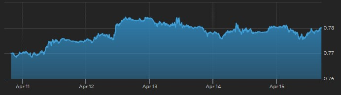

上周市场总结
上周市场开局相对平静，周中受到中国公布的经济数据好于预期的利好影响，投资者的担忧情绪有所缓解，各国股市纷纷上涨。日经225指数更是领涨各大股指，因市场传闻日本央行将扩大ETF购买规模以提振日本股市。
另一方面，因避险需求短期消退，各国国债收益率由跌转升。
汇市方面，英镑以及欧元因为英国退欧的不确定性，波动加大。日元对美元则在突破108日元的关口后回落，因多位日本高官暗示将会干预。
平静的一周在周末宣告结束，日本九州地区在周四和周五晚间连续发生强震，其对日本各金融市场以及日本经济的持续影响需要密切关注。而在周日晚间举行的多哈会议上，各产油国未能就原油冻产达成协议。此次协议的流产给近期价格有所恢复的原油市场投下了一道深深的阴影。
本周投资建议(2016.04.18-2016.04.24)
- 股市：突如其来的的大地震可能会给上周刚刚扭转跌势的日本股市带来压力，但日本央行将扩大购买ETF，以及日本政府高层强烈暗示将在日元继续攀升时加以干预，使得日本股市短期内仍有上涨动力。如果本周日本股市回调，可以关注日本股市基金的买入机会。
- 汇市：因日元汇率逼近105日元的关键点位，日元空头需要注意日本官方突然出手干预的风险。而随着英国退欧公投的临近，英镑以及欧元投资者需要注意波动性加大的风险
- 商品： 多哈会议冻产协议流产使得原油价格承压，短期投资者需要加以回避。原油价格下跌将使得各国通胀进一步降低，美联储短期内加息也更为困难。相信在此情况下，黄金仍然会收到市场资金的青睐。
- 债券：建议关注西班牙等次要欧元区国家的国债以及投资级的欧元区信用债。在负利率环境下，为获得更高的持有到期收益，市场资金可能转而投资于那些具有较高票息且风险相对可控的国债以及信用债。
一周要闻回顾
中国：
- IMF将中国2016年经济增速预估由6.3%上调为6.5%，全球经济增速则由3.4%下调为3.2%。
- 3月全国商品房待售面积减少415万平方米。
- 据外媒报道，人民币对黄金基准定价将于4月19日推出，预示人民币与美元或进一步脱钩。
- 财政部部长楼继伟表示全球经济正在温和复苏，但前景仍存在不确定性。
| 公布日期 | 公布数据 | 前值 | 预测 |
| 4/11 | 3月CPI同比 2.3% | 2.3% | 2.4% |
| 4/11 | 3月PPI同比 -4.3% | -4.9% | -4.6% |
| 4/12 | 3月实际使用外资(FDI)同比 7.8% | 1.8% | 2.4% |
| 4/13 | 3月出口同比(美元) +11.5% | -25.4% | 10% |
| 4/13 | 3月进口同比(美元) -7.6% | -13.8% | -10.1% |
| 4/13 | 3月贸易帐(美元) 298.6亿 | 325.9亿 | 349.5亿 |
| 4/15 | 一季度GDP同比 6.7% | 6.8% | 6.7% |
| 4/15 | 3月M0货币供应同比 4.4% | -4.8% | 4.3% |
| 4/15 | 3月M1货币供应同比 22.1% | 17.4% | 18.4% |
| 4/15 | 3月M2货币供应同比 13.4% | 13.3% | 13.5% |
| 4/15 | 3月社会融资规模 23400亿人民币 | 7802亿 | 14000亿 |
| 4/15 | 3月规模以上工业增加值(今年迄今)同比 5.8% | 5.4% | 5.5% |
| 4/15 | 3月城镇固定资产投资(今年迄今)同比10.3% | 10.2% | 10.4% |
| 4/16 | 一季度GDP环比 1.1% | 1.6% | 1.5% |
美国：
上周“赚洋钱美国加息压力指数” 2 (满分5)
- 美联储周三发布的经济状况褐皮书认为自2月底至4月7日，国内经济持续温和增长。
- 国际评级机构惠誉确认美国AAA顶级信用评级，前景展望为稳定。
- 上周公布的经济数据显示美国国内通胀及经济增长不及预期，就业市场则持续向好。
| 公布日期 | 公布数据 | 前值 | 预测 |
| 4/12 | 3月NFIB中小企业乐观程度指数 92.6 | 92.9 | 93.5 |
| 4/12 | 3月进口价格指数环比 0.2% | -0.3% | 1% |
| 4/12 | 3月进口价格指数同比 -6.2% | -6.1% | -4.8% |
| 4/13 | 3月政府预算 -1080亿美元 | -529亿 | -1040亿 |
| 4/13 | 3月零售销售环比 -0.3% | -0.1% | 0.1% |
| 4/13 | 3月PPI环比 -0.1% | -0.2% | 0.2% |
| 4/13 | 3月PPI同比 -0.1% | 0.0% | 0.3% |
| 4/13 | 4月10日当周API原油库存 +622.3万桶 | -431.9 | -- |
| 4/13 | 4月10日当周EIA原油库存 +663.4万桶 | -493.7 | +100 |
| 4/13 | 2月商业库存环比 -0.1% | 0.1% | -0.1% |
| 4/14 | 4.9当周首次申请失业救济人数 25.3万 | 26.7万 | 27万 |
| 4/14 | 4.2当周续请失业救济人数 217.1万 | 219.1万 | 218.3万 |
| 4/14 | 3月CPI环比 0.1% | -0.2% | 0.2% |
| 4/14 | 3月CPI同比 0.9% | 1% | 1.1% |
| 4/14 | 3月核心CPI环比 0.1% | 0.3% | 0.2% |
| 4/15 | 4月纽约联储制造业指数 9.56 | 0.62 | 2 |
| 4/15 | 3月工业产出环比 -0.6% | -0.5% | -0.1% |
| 4/15 | 3月设备使用率 74.8% | 76.7% | 75.3% |
| 4/15 | 3月制造业产出环比 -0.3% | 0.2% | 0.1% |
| 4/15 | 4月密歇根大学消费者信心指数初值 89.7 | 91 | 92 |
| 4/16 | 2月国际资本净流入 335亿美元 | 1184亿 | -- |
| 4/16 | 2月长期资本净流入 720亿美元 | -120亿 | -- |
| 4/16 | 2月长期资本净流入 720亿美元 | -120亿 | -- |
| 4/16 | 外资2月净卖出美国国债 -99亿美元 | +504亿 | -- |
欧洲及其它发达国家：
1.欧元区
- 欧洲央行行长德拉吉在IMFC声明中表示：欧洲央行管委会预期欧洲央行关键利率将在相当长的时间内维持目前水平或更低。
- IMF总裁拉加德表示IMF支持欧洲央行利用负利率。
| 公布日期 | 公布数据 | 前值 | 预测 |
| 4/11 | (意大利)2月季调后工业产出环比 -0.6% | 1.7% | -0.9% |
| 4/11 | (意大利)2月未季调工业产出同比 +5.2% | 0.6% | -- |
| 4/11 | (意大利)2月工作日调整后工业产出同比 +1.2% | 3.8% | 1.4% |
| 4/12 | (德国)3月CPI环比终值 0.8% | 0.8% | 0.8% |
| 4/12 | (德国)3月CPI同比终值 0.3% | 0.3% | 0.3% |
| 4/12 | (德国)3月批发价格指数环比0.3% | -0.5% | -- |
| 4/12 | (德国)3月批发价格指数同比 -2.6% | -1.9% | -- |
| 4/13 | (法国)3月CPI环比终值 0.7% | 0.7% | 0.7% |
| 4/13 | (法国)3月CPI同比终值 -0.1% | -0.2% | -0.2% |
| 4/13 | (欧元区)2月工业产出环比 -0.8% | 2.1% | -0.7% |
| 4/13 | (欧元区)2月工业产出同比 0.8% | 2.8% | 1.3% |
| 4/14 | (欧元区)3月CPI环比1.2% | 0.2% | 1.2% |
| 4/14 | (欧元区)3月CPI同比终值 0% | -0.1% | -0.1% |
| 4/14 | (欧元区)3月核心CPI同比终值 1% | 1% | 1% |
| 4/15 | (意大利)2月贸易帐 38.56亿欧元 | 0.35亿 | 27万 |
| 4/15 | (意大利)2月对欧盟贸易帐12.49亿欧元 | 5.21亿 | -- |
| 4/15 | (意大利)2月非欧盟贸易帐 26.16亿欧元 | -4.95亿 | -- |
| 4/15 | (欧元区)2月经季调贸易帐 202亿欧元 | 212亿 | 215亿 |
| 4/15 | (欧元区)2月未季调贸易帐 190亿欧元 | 62亿 | -- |
2.英国
- 最新民调显示英国国内支持和反对退出欧盟的人数非常接近，退欧公投具有很大不确定性
- 包括美国总统奥巴马在内多位国际政要呼吁英国留在欧盟内部。
- 市场认为年内全球经济的最大不稳定因素是英国退欧公投。一旦英国退欧，对欧元以及英镑将会有重大打击。
| 公布日期 | 公布数据 | 前值 | 预测 |
| 4/12 | 3月CPI环比 0.4% | 0.2% | 0.3% |
| 4/12 | 3月CPI同比 0.5% | 0.3% | 0.4% |
| 4/12 | 3月核心CPI同比 1.5% | 1.2% | 1.3% |
| 4/12 | 3月零售物价指数环比 0.4% | 0.5% | 0.3% |
| 4/12 | 3月零售物价指数同比 1.6% | 1.3% | 1.4% |
| 4/12 | (2月DCLG房价指数同比 7.6% | 7.9% | -- |
| 4/14 | 3月三个月RICS房价指数42% | 50% | 50% |
| 4/14 | 4月14日当周央行利率决议 0.5% | 0.5% | 0.5% |
| 4/14 | 4月央行资产购买规模 3750亿英镑 | 3750亿 | 3750亿 |
3.日本
- 日本九州在周四及周五深夜连续发生6.4级和7.4级强地震，造成人员伤亡和财产损失。
- 日本官方长官菅义伟在接受路透专访时称：G20会议没有说“不能干预汇率”，日本政府正在密切关注外汇市场并准备好在必要时采取“合适”措施。
- 日本财长麻生太郎表示不希望看到日元汇率快速单边波动，不希望看到日元快速升值或者贬值。认为外汇市场过度波动将带来不利影响，将在必要时采取行动。讲话发表前，日元连续大幅升值，对美元/日元攻破108日元关口。
- 日本央行行长黑田东彦表示：对政府是否准备干预日元汇率不予置评。如果汇率波动影响经济和通胀，将会毫不犹豫采取进一步宽松措施。
- 消息人士称日本央行将扩大ETF购买规模，以提振日本股市。
| 公布日期 | 公布数据 | 前值 | 预测 |
| 4/11 | 2月核心机械订单环比 -9.2% | 15% | -12% |
| 4/11 | 2月核心机械订单同比 -0.7% | 8.4% | -2.4% |
| 4/12 | 3月银行贷款(含信托)同比 2% | 2.2% | -- |
| 4/12 | 3月银行贷款(不含信托)同比 2% | 2.2% | -- |
| 4/13 | 3月货币存量M2同比 3.2% | 3.1% | 3.1% |
| 4/13 | 3月货币存量M3同比 2.6% | 2.5% | 2.5% |
| 4/13 | 3月国内企业商品物价指数环比 -0.1% | -0.2% | 0% |
| 4/13 | 3月国内企业商品物价指数同比 -3.8% | -3.4% | -3.5% |
| 4/14 | 4月8日当周日本净买进国外债券 -11753亿日元 | -15551亿 | -- |
| 4/14 | 4月8日当周日本净买进国外股票 -2060亿日元 | -501亿 | -- |
| 4/14 | 4月8日当周外资净买进日本债券 8165亿日元 | 302亿 | -- |
| 4/14 | 4月8日当周外资净买进日本股票 1465亿日元 | 4152亿 | -- |
4.澳大利亚
- 澳联储发布金融稳定性评估，认为澳大利亚金融系统整体状况良好。国内风险从房屋贷款转移到地产商贷款。中国买家对澳大利亚房屋需求的下滑可能令房屋价格承压。
- 澳大利亚财长Scott Morrison表示：政府财政预算将关注于推动投资。
- 周二，花旗集团量化分析师在报告中表示澳元空单达到15个月来最多。
- 澳大利亚外国投资审查委员会年报显示，截至2015年6月的过去一年里，中国买家对澳大利亚住宅和商业地产的投资已从此前一年的124亿澳元上升至243澳元，接近翻番。
| 公布日期 | 公布数据 | 前值 | 预测 |
| 4/11 | 2月季调后房屋贷款许可件数环比 1.5% | -3.9% | 2% |
| 4/11 | 2月季调后投资房屋贷款许可额环比 4.1% | -1.6% | -- |
| 4/12 | 3月NAB商业景气指数 12 | 8 | -- |
| 4/12 | 3月NAB商业信心指数 6 | 3 | -- |
| 4/13 | 4月西太平洋消费者信心指数 95.1 | 99.1 | -- |
| 4/13 | 4月西太平洋消费者信心指数环比 -4% | -2.2% | -- |
| 4/14 | 3月就业人口变动 +2.61万 | 0.03万 | 1.7万 |
| 4/14 | 3月失业率 5.7% | 5.8% | 5.9% |
| 4/14 | 3月就业参与率 64.97% | 64.9% | 65% |
| 4/14 | 3月全职就业人口变动 -0.88万 | 1.59万 | -- |
| 4/14 | 3月兼职就业人口变动 +3.49万 | -1.56万 | -- |
5.加拿大
- 加拿大央行决议声明：受大宗商品价格下跌和商业投资不足影响，经济潜在产出增速料将疲软。上调一季度GDP增张预期至2.8%，同时下调二季度GDP增长预期至1%。上调2016年GDP增长预期至1.7%，同时下调2017年GDP增长预期至2.3%
| 4/13 | 4月13日当周加拿大央行利率决议 0.5% | 0.5% | 0.5% |
| 4/14 | 2月新屋价格指数环比 0.2% | 0.1% | 0.1% |
| 4/14 | 2月新屋价格指数同比 1.8% | 1.8% | 1.8% |
| 4/15 | 2月制造业装船环比 -3.3% | 2.3% | -1.5% |
新兴市场国家：
- 伊朗石油部长将不参加4月17日在多哈举行的产油国会议，参与商讨原油冻产协议。
- 沙特威胁称如果美国国会通过允许追究沙特政府涉嫌“9.11”恐怖袭击事件的法案，为避免资产受到美方冻结，沙特将会抛售在美国的资产。资料显示沙特目前持有大约7500亿美元资产，包括美国债券和其他资产。
- 欧盟外长莫盖里尼表示伊朗是欧洲能源结构的重要组成部分，欧盟支持伊朗加入WTO。
- 俄罗斯财长重申2016财年俄罗斯政府预算赤字占GDP比重料仍将维持在3%左右。
一周市场回顾
全球股票市场
综述: 上周全球股市普涨。周中，中国公布的经济数据明显好于预期，受到这一利好消息的提振，各主要股市均向上攀升。而日本股市更是在连续两周大跌后，反弹上涨过6%，因市场传闻日本央行将扩大购买ETF以提振日本股市。至周四以后，各主要股市呈现盘整走势，涨幅略有收窄。市场对全球经济前景不确定性的忧虑始终阴霾难散。
- CBOE的“恐慌性指数”VIX本周大幅走低。周开盘15.34，至周五收盘为13.62，上周收盘15.36，跌幅达-11.33%。显示市场的恐慌情绪得到一定程度的修复。指数周一曾录得7.88%的涨幅，达到周内高点16.57。但之后一路向下，周内低点13.38，跌幅-12.89%。
- 美国S&P 500本周报收于2080.73，上周收盘2047.60，本周开盘2050.23，一周上涨1.62%。周内高点2087.84，涨幅1.97%。周内低点2039.74，跌幅-0.38%。
- 德国DAX指数本周报收于10051.57，上周收盘9622.26，本周开盘9595.56，一周上涨4.46%。周内高点10098.44，涨幅4.95%。周内低点9524.66，跌幅-1.01%。
- 法国CAC 40指数本周报收于4495.17，上周收盘4303.12，本周开盘4294.12，一周上涨4.46%。周内高点4515.00，涨幅4.92%。周内低点4263.08，跌幅-0.93%。
- 英国富时100指数本周报收于6343.75，上周收盘6204.41，本周开盘6204.41，一周上涨2.25%。周内高点6373.93，涨幅2.73%。周内低点6165.46，跌幅-0.63%。
- 欧洲Stoxx Europe 600指数本周报收于342.79，上周收盘331.86，本周开盘331.80，一周上涨3.29%。周内高点344.41，涨幅3.78%。周内低点329.11，跌幅-0.83%。
- 日经225指数本周报收于16848.03，上周收盘15821.52，本周开盘15761.57，一周大涨6.49%。周内高点16928.67，涨幅7%。周内低点15525.49，跌幅-1.87%。
- 澳大利亚S&P/ASX 200指数本周报收于周内最高点5157.50，上周收盘4937.60，本周开盘4937.60，一周上涨4.45%。周内低点4910.80，跌幅-0.54%。
- 加拿大S&P/TSX综合指数本周报收于13637.20，上周收盘13396.73，本周开盘13422.13，一周上涨1.79%。周内高点13703.61，涨幅2.29%。周内低点13422.13，录得最小涨幅0.19%。
- 道琼斯新兴市场指数本周报收于3494.03，上周收盘3376.15，本周开盘3409.50，一周上涨3.49%。周内高点3504.52，涨幅3.80%。周内低点3370.88，跌幅-0.16%。
全球外汇市场
综述: 本周汇市相对平淡，各主要货币在盘整走势下呈现小幅涨跌。因最新民调显示英国退欧风险加大，英镑以及欧元周中承压下跌。而欧洲央行表示将会维持利率在目前的低水平甚至进一步调低也刺激欧元下跌，最终欧元周跌幅超1%。日元在周一大涨对美元破108日元关口后，因多位日本高官暗示若日元持续上涨将会干预，周中走势趋弱并重回108日元上方，最终上周收盘小幅下跌。
- 美元指数：走势仍然疲软，周内微幅上涨0.55% 报收于94.71。
- 人民币：在岸人民币周五报收6.4781，微跌-0.17%。离岸人民币则录得-0.11%的跌幅，收于6.4860。
- 欧元：周五收于1.1284，相对于上周收盘1.1399， 周跌幅-1.01%。周内低点1.1234，跌幅-1.45%。
- 英镑：周内仍然维持震荡走势，周内最大涨幅1.56%，最大跌幅-0.26%，最终报收于1.4202，微涨0.52%。
- 日元：在周一打破108的关键点位达到周内高点107.65之后回落，最终收于108.76，微跌0.65%。
- 澳元：受上周公布的较好的本国经济数据所支撑，澳元本周上攻。周五收于0.7722，录得2.20%涨幅。
- 加元：受近期利好经济数据的提振，加元上周上涨1.29%，收于0.7799。 
- 澳大利亚S&P/ASX 200指数本周报收于周内最高点5157.50，上周收盘4937.60，本周开盘4937.60，一周上涨4.45%。周内低点4910.80，跌幅-0.54%。
全球商品能源市场
综述: 上周原油小幅上涨突破40美元大关。虽然有伊朗拒绝参加多哈会议参与冻产谈判的不利因素，但市场仍然倾向于认为各产油国能在伊朗缺席的情况下在多哈会议达成一个原油冻产协议，并利好油价。本周在多哈会议冻产协议流产的情况下，投资者需要警惕短期油价下跌的风险。黄金则在市场情绪平复且各国经济数据温和向好的的背景下小幅下跌，因市场避险需求短期消退。另一方面，中国在上周公布的工业及经济增长数据好于预期，使得作为重要工业原料的铜上周上涨过3%，因市场预期中国的需求将有所恢复。
- 原油：NYMEX五月到期原油期货CLK6电子盘上周报收于每桶40.36美元，上涨1.61%，突破40美元大关。
- 黄金：COMEX六月到期黄金期货GCM6电子盘在上周二触及周内高点1264.70后小幅回落，上周五最终报收于每盎司1234.60美元，下跌-0.74%。
- 铜：COMEX五月到期铜期货HKG6电子盘本周大涨3.16%，上周五报收于2.1530美元。
全球债券市场
综述: 受到包括中国在内的主要经济体发布的利好经济数据的影响，上周市场恐慌情绪得到一定修复，投资者风险偏好明显上升。与股市等风险性市场普遍上涨相对应的是，作为避险工具的欧美各主要国家国债的收益率上周普遍上涨。表明在前期被市场避险资金推高的债券市场，短期可能进入一个调整阶段。赚洋钱团队近期会密切关注多哈会议后原油等基础商品价格，以及受其影响的各国通胀类数据，以此研判各大央行货币政策调整的可能性，并就此判断国际债市的下一步趋势。
- 美国：上周美国 10年期国债收益率报收1.754，较前一周收市价1.19上涨2.04%。
- 欧元区：上周欧元区国债市场继续维持分化走势，只是涨跌易位。德法两国国债收益率走势逆转，迥异于前一周收益率大跌的走势，上周两国国债收益率均显著上涨。与此对应的是，虽然意大利国债收益率小幅上涨，但西班牙国债收益率在周边市场涨声一片的情况下，扭转前一周大涨走势，下跌近2%。市场的反转型分化或预示着，在负利率环境下，投资者可能转而青睐票息较高的欧元区国家国债，以获得更高的持有到期收益。
- 英国：上周10年期国债收益率走高，报收于1.417，涨幅3.58%。
- 日本：上周公布的数据显示前一周(4月8日当周)外资净买入日本债券达8165亿日元。这表明在日元持续升值的背景下，日本长期国债或正在吸引更多的投资者。与此对应的是，上周日本10年期国债收益率跌势持续，周收盘-0.111，大跌-35.37%。
- 澳大利亚：10年期国债收益率大涨6.42%，报收于2.571。
- 加拿大：10年期国债收益率报收1.271，涨幅3.67%。
图1.德国十年期国债收益率上周收于0.131，一周暴涨32.32%。上周四一度触及0.186的高点，较前一周收盘价0.099录得87.88%的惊人涨幅。
图2.法国十年期国债收益率上周收于0.481，一周大涨10.07%。
图3.意大利十年期国债收益率上周收于1.350，一周上涨2.35%。
图4.西班牙十年期国债收益率上周收于1.497，一周下跌-1.96%。
本周重大事件
| 日期 | 重大事件 | 时间(北京) |
| 4/18 | (新西兰)一季度CPI数据 | 06:45 |
| 4/18 | (英国)4月Rightmove房价数据 | 07:01 |
| 4/18 | (中国)三月70个大中城市房价指数 | 09:30 |
| 4/18 | (美国)4月NAHB房产市场指数 | 22:00 |
| 4/19 | (英国)财政大臣在下议院讨论欧盟成员国地位问题 | 00:00 |
| 4/19 | (美国)FOMC票委Eric Rosengren发表讲话 | 07:00 |
| 4/19 | (韩国)当周央行7天回购利率 | 09:00 |
| 4/19 | (澳大利亚)澳联储发布4月货币政策会议纪要 | 09:30 |
| 4/19 | (德国)4月ZEW经济现况和经济景气指数 | 17:00 |
| 4/19 | (欧元区)4月ZEW经济景气指数 | 17:00 |
| 4/19 | (西班牙)央行行长暨欧洲央行管委林德发表讲话 | 19:40 |
| 4/19 | (美国)3月新屋开工和3月营建许可 | 20:30 |
| 4/19 | (澳大利亚)澳联储主席Glenn Stevens发表讲话 | 21:30 |
| 4/19 | (英国)央行行长Mar看Carney赴上议院作证 | 23:00 |
| 4/20 | (美国)4月17日当周API原油库存 | 04:30 |
| 4/20 | (日本)3月商品贸易帐以及进/出口同比 | 07:50 |
| 4/20 | (德国)3月PPI同比及环比数据 | 14:00 |
| 4/20 | (英国)3月失业数据及2月平均工资数据 | 16:30 |
| 4/20 | (加拿大)2月批发销售环比 | 20:30 |
| 4/20 | (美国)3月成屋销售总数年化 | 22:00 |
| 4/20 | (美国)4月17日当周EIA原油库存 | 22:30 |
| 4/21 | (日本)4月15日当周日本净买进国外债券及股票 | 07:50 |
| 4/21 | (日本)4月15日当周外资净买进日本债券及股票 | 07:50 |
| 4/21 | (法国)4月INSEE商业/制造业信心指数 | 14:45 |
| 4/21 | (英国)3月零售销售环比及同比 | 16:30 |
| 4/21 | (英国)3月政府收支短差及公共部门净借款 | 16:30 |
| 4/21 | (欧元区)欧洲央行宣布利率决议及公布相关利率 | 19:45 |
| 4/21 | (欧元区)欧洲央行行长德拉吉召开新闻发布会 | 20:30 |
| 4/21 | (美国)3月芝加哥联储全国活动指数 | 20:30 |
| 4/21 | (美国)4月16日当周首次申请失业救济人数 | 20:30 |
| 4/21 | (美国)4月9日当周续请失业救济人数 | 20:30 |
| 4/21 | (美国)4月费城联储制造业指数 | 20:30 |
| 4/21 | (美国)2月FHFA房价指数环比 | 21:00 |
| 4/21 | (欧元区)4月消费者信心指数初值 | 22:00 |
| 4/21 | (美国)3月谘商会领先指标环比 | 22:00 |
| 4/22 | (日本)4月制造业PMI初值 | 10:00 |
| 4/22 | (日本)2月第三产业活动指数环比 | 12:30 |
| 4/22 | (法国)4月制造业/服务业/综合PMI初值 | 15:00 |
| 4/22 | (德国)4月制造业/服务业/综合PMI初值 | 15:30 |
| 4/22 | (欧元区)4月制造业/服务业/综合PMI初值 | 16:00 |
| 4/22 | (意大利)2月工业销售同比/环比 | 16:00 |
| 4/22 | (意大利)2月工业订单同比/环比 | 16:00 |
| 4/22 | (意大利)2月零售销售同比/环比 | 17:00 |
| 4/22 | (加拿大)2月零售销售环比 | 20:30 |
| 4/22 | (加拿大)3月CPI同比/环比 | 20:30 |
| 4/22 | (美国)4月Markit制造业PMI初值 | 21:45 |